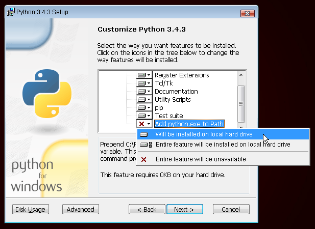

Commençons par Python
On est parti !
Tout d'abord, laissez-nous vous en dire un peu plus sur Python. Python est un langage de programmation très populaire qui peut être utilisé pour créer des sites web, des jeux, des logiciels scientifiques, des graphiques et bien d'autres choses encore.
Python a été créé à la fin des années 1980. l'objectif principal des créateurs du langage était de rendre ce langage de programmation lisible aussi bien par des humains que par des machines. Par conséquent, il a l'air beaucoup plus simple à lire que d'autres langages de programmation. Cependant, ne vous fiez pas à son apparente simplicité de lecture et d'apprentissage : Python est un langage très puissant !
Installation de Python
: Si vous avez suivi la partie installation du tutoriel, vous n'avez pas besoin d'installer Python à nouveau. Vous pouvez sauter cette partie et passer au chapitre suivant !
Note : ce sous-chapitre est en partie inspiré d'un autre tutoriel réalisé par les Geek Girls Carrots (https://github.com/ggcarrots/django-carrots)
Django est écrit en Python. Pour réaliser quelque chose en Django, il va nous falloir Python. Commençons par installer ce dernier ! Pour ce tutoriel, nous utilisons la version 3.4 de Python. Si vous avez une version antérieure, il va falloir la mettre à jour.
Windows
Vous pouvez télécharger Python pour Windows sur le site web https://www.python.org/downloads/release/python-343/. Après avoir téléchargé le fichier *.msi, lancez-le en double-cliquant sur son icône et suivez les instructions qui s'affichent à l'écran. Attention : il est important de se souvenir du chemin d'accès (le dossier) où vous avez installé Python. Vous en aurez besoin plus tard.
Une chose à laquelle vous devez faire attention : dans le second écran de l'installateur intitulé "Customize", assurez-vous de bien dérouler l'écran jusqu'en bas et de choisir l'option "Ajouter python.exe au chemin", comme sur l'image ci dessous :

Linux
Il est très probable que Python soit déjà installé sur votre machine. Afin de vérifier qu'il est bien installé (et surtout quelle version vous avez), ouvrez une console et tapez la commande suivante :
$ python3 --version
Python 3.4.3
Si Python n'est pas installé ou que vous avez une version différente, vous pouvez l'installer en suivant les instructions suivantes :
Debian ou Ubuntu
Tapez cette commande dans votre terminal :
$ sudo apt install python3.4
Fedora
Tapez cette commande dans votre terminal :
$ sudo dnf install python3.4
openSUSE
Tapez cette commande dans votre terminal :
$ sudo zypper install python3
OS X
Vous devez aller sur le site https://www.python.org/downloads/release/python-343/ et télécharger l'installateur Python :
- Téléchargez le fichier Mac OS X 64-bit/32-bit installer,
- Double-cliquez sur le fichier python-3.4.3-macosx10.6.pkg pour lancer l'installateur.
Vérifiez que l'installation s'est bien déroulée en ouvrant votre Terminal et en lançant la commande python3:
$ python3 --version
Python 3.4.3
Si vous avez des questions ou si quelque chose ne fonctionne pas et que vous ne savez pas quoi faire : demandez de l'aide à votre coach ! Il arrive parfois que les choses ne se déroulent pas comme prévu et il est alors préférable de demander à quelqu'un qui a plus d'expérience.